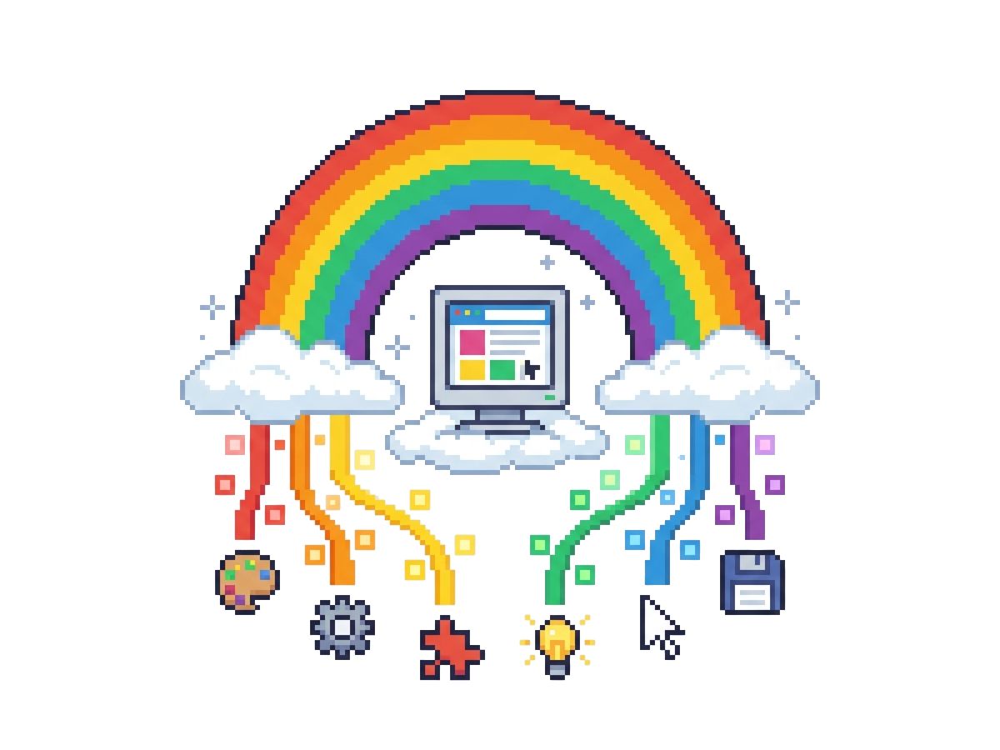
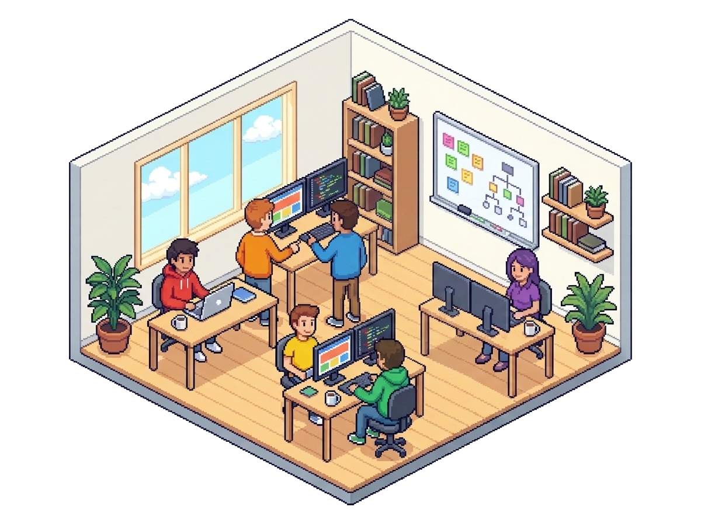

Rainbow
서로 다른 여섯 가지 색이 모여 하나의 무지개가 되듯, 각자의 역량을 모아 하나의 웹사이트를 만드는 팀입니다.

팀 소개
레인보우는 오픈소스 SW 활용 수업 I조의 6명이 모인 팀입니다.
작은 IT 개발 스튜디오처럼 각자 맡은 역할을 책임지고, Git과 GitHub로 협업하며 팀 포트폴리오 웹사이트를 만들고 있습니다.

팀 구성 배경
혼자 하는 개발과 달리 팀 개발에는 역할 분담, 일정 관리, 코드 공유와 검토가 필요합니다.
레인보우는 이 협업 과정을 실제 프로젝트로 경험하기 위해 모였고, 그 첫 결과물로 팀을 소개하는 포트폴리오 웹사이트를 선택했습니다.
프로젝트 소개
Rainbow Portfolio는 6명의 팀원을 소개하는 IT 개발 스튜디오형 포트폴리오 웹사이트입니다.
- 프로젝트명
- Rainbow Portfolio
- 제작 목적
- 팀원들의 역할, 보유 기술, 관심 분야와 팀 프로젝트 활동을 하나의 웹사이트에 정리해 소개합니다.
- 개발 환경
- HTML / CSS / JavaScript
- 협업 · 배포
- Git / GitHub · GitHub Pages
팀 목표
-
함께 만드는 웹
HTML, CSS, JavaScript로 PC와 모바일에서 모두 읽기 편한 웹사이트를 완성합니다.
-
기록이 남는 협업
Issue, Branch, Pull Request, 코드 리뷰를 거쳐 모든 작업 과정을 GitHub에 남깁니다.
-
끝까지 완성하고 공개하기
GitHub Pages로 배포하고, 각자 구현한 기능을 직접 설명할 수 있도록 정리합니다.
활동 방향
-
Issue
작업 전에 할 일, 담당자, 완료 조건을 등록합니다.
-
Branch
기능마다 브랜치를 나누어 서로의 작업이 섞이지 않게 합니다.
-
Commit
의미 있는 단위로 나누고 내용을 알 수 있는 메시지로 기록합니다.
-
Pull Request & Review
main에 바로 올리지 않고 팀원의 검토와 승인을 받습니다.
-
Merge & Deploy
검토를 마친 코드를 병합하고 GitHub Pages로 배포합니다.